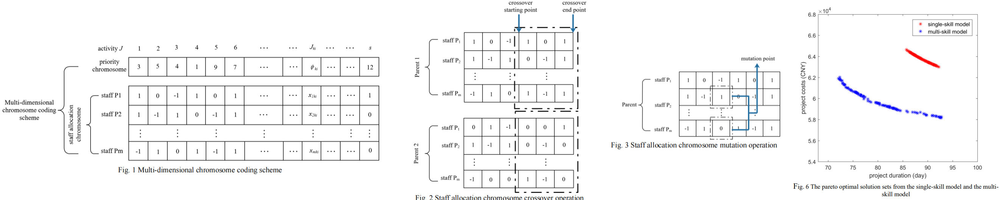

{{ page.title }}
IEEE International Conference on Industrial Engineering and Systems Management (IESM 2019)
Chong Zhu Yuan Xue Zhijie He Zhenqiang Bao Zhaoyue Zhang Kaixuan Hu
Yangzhou University, Yangzhou, China

|
Abstract
The growing need of responsiveness for enterprises
facing market volatility raises a strong demand for flexibility in
their human resource management. This paper presents a multi-objective model for Multi-skill Project Scheduling Problem.
We propose a new wage distribution method in which different
perform efficiencies of human resources are taken into account.
The model aims at minimizing project duration and project costs
concurrently. An improved NSGA-II algorithm is designed to
solve the model. The algorithm introduces a multi-dimensional
chromosome coding scheme to identify the priorities and staff
allocation of each activity. Special chromosome crossover and
mutation operation are employed to address resource conflicts
and constraint violations. Eventually, A case study is presented to
verify the efficiency of the proposed approach.
|
|
Results


Bibtex
@INPROCEEDINGS{8948152,
author={Zhu, Chong and Xue, Yuan and He, Zhijie and Bao, Zhenqiang and Zhang, Zhaoyue and Hu, Kaixuan},
booktitle={2019 International Conference on Industrial Engineering and Systems Management (IESM)},
title={A Multi-objective Model for Multi-skill Project Scheduling Problem considering Perform Efficiency},
year={2019},
volume={},
number={},
pages={1-6},
doi={10.1109/IESM45758.2019.8948152}
}